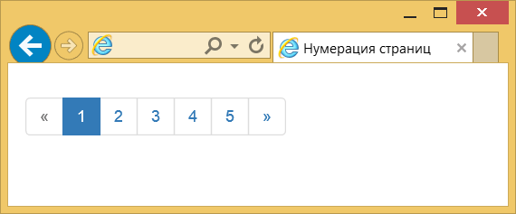
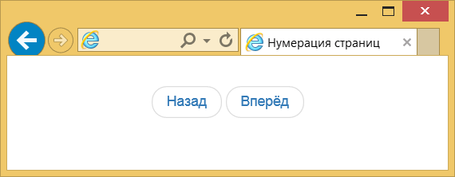
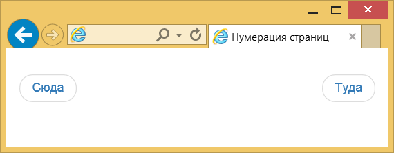

Нумерация страниц
Для блогов общее количество постов разбивается на отдельные страницы, чтобы меньше загружать трафик и для упрощения восприятия информации.
Навигация между страницами происходит одним из двух способов:
1. выводятся номера всех страниц со стрелками, ведущими на предыдущую и следующую страницу;
2. выводятся только ссылки на предыдущую и следующую страницу.
Все страницы
Нумерация делается с помощью элемента
Номера добавляются через элементы
Например, если нам нужны ссылки для перехода на первую и последнюю страницу или ссылки ведущие на предыдущую и следующую страницу.
Текущий пункт навигации выделяется через класс active добавляемый к
Если требуется заблокировать какой-то пункт, то добавьте к нему класс disabled.
Блокирование нужно, чтобы не вводить пользователя в заблуждение.
Так, если он находится на первой странице, то переход на предыдущую страницу невозможен, потому как её просто в данный момент нет.
При наведении курсора мыши на такой пункт указатель меняет свой вид.
Для уменьшения или увеличения размера ссылок используйте соответственно классы pagination-sm и pagination-lg, добавив их к
Сам класс pagination никуда не уходит при этом.
Вот как будет выглядеть код для большего размера.
Предыдущая и следующая страница
Второй тип навигации по страницам содержит только ссылки на предыдущую и следующую страницу.
Соответственно, упрощается код и вид нумерации, поскольку в списке будет всего два пункта.
При этом для
Ссылки выводятся достаточно близко друг от друга и чтобы их разнести и выровнять по левому и правому краям добавьте к ним классы previous и next.
Результат данного примера:
